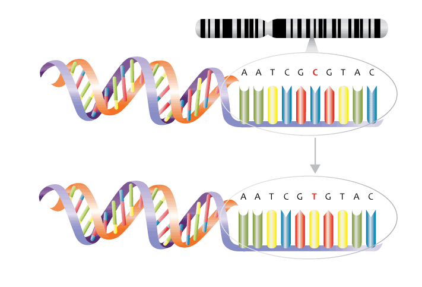

Single Nucleotide Polymorphism (SNP)
Porquê utilizar SNPs como Marcadores Moleculares?
SNPs são variações genéticas que envolvem a substituição de um único nucleotídeo por outro em uma posição específica do genoma. Essas variações podem ocorrer tanto em regiões codificantes como não codificantes do DNA. Eles representam a forma mais comum de variação genética presente em todas as espécies estudadas até o momento [1,2]. Os SNPs são altamente polimórficos e podem ser encontrados em diferentes frequências em diferentes populações, permitindo o estudo da diversidade genética dentro e entre espécies [3]. Para que a substituição seja considerada um SNP, ela precisa estar presente em uma frequência mínima de 1% em uma população. Isso significa que a variação genética observada é comum o suficiente para ser considerada uma característica da população em questão. Vale ressaltar que essa frequência pode variar dependendo do contexto e da população em análise [4,5].

Os SNPs são amplamente distribuídos no genoma, e sua alta frequência e polimorfismo tornam-nos excelentes candidatos a marcadores moleculares para estudos de variabilidade genética, conservação de espécies e melhoramento genético. Além disso, eles podem ser facilmente detectados por técnicas moleculares como PCR, sequenciamento de nova geração e genotipagem de matriz de SNPs [6]. Os SNPs têm sido amplamente utilizados na Biologia da Conservação para estudar a estrutura populacional e a variabilidade genética das espécies em risco de extinção. Eles permitem a identificação de populações com baixa variabilidade genética e o monitoramento do fluxo gênico entre populações, o que é fundamental para a elaboração de planos de conservação eficazes [7].
Os SNPs também têm sido amplamente utilizados no melhoramento genético de plantas e animais. Eles permitem a seleção de indivíduos com características desejáveis com base em sua composição genética, o que pode aumentar a eficiência do processo de melhoramento. Além disso, a genotipagem de SNPs pode ser usada para estudar a estrutura populacional de espécies cultivadas e identificar variedades com alto valor nutricional ou resistência a doenças [8]. Embora os SNPs sejam excelentes marcadores moleculares, eles têm algumas limitações. Em particular, eles não são úteis para detectar grandes rearranjos cromossômicos, inserções e deleções. Além disso, o custo associado à genotipagem de SNPs pode ser um obstáculo para estudos em larga escala [9].
Desequilíbrio de Ligação
Um conceito extremamente importante em análises genômicas é o de desequilíbrio de ligação, também conhecido como desequilíbrio de haplótipos ou LD (Linkage Disequilibrium). O LD é definido como a não aleatoriedade da associação entre dois ou mais loci no genoma. Em outras palavras, o LD ocorre quando alelos de diferentes loci são herdados juntos com mais frequência do que seria esperado ao acaso [10].
A importância do LD está relacionada à sua capacidade de influenciar a identificação de associações genéticas em estudos de genômica, especialmente em estudos de associação de genoma inteiro (GWAS) que utilizam SNPs como marcadores moleculares [11]. Isso ocorre porque os SNPs estão em LD com outros loci não genotipados, ou seja, com outras variações genéticas que podem influenciar uma determinada característica fenotípica. Dessa forma, o LD pode ser usado para mapear genes associados a doenças complexas e a características quantitativas em diferentes populações [12].
Por outro lado, o LD também pode afetar a precisão dos resultados dos estudos de associação genômica, pois pode levar a falsos positivos ou falsos negativos na identificação de associações entre um determinado SNP e um fenótipo [13]. Além disso, o LD pode afetar a eficiência da seleção natural e artificial em populações, pois pode influenciar a co-ocorrência de alelos em um determinado locus e, portanto, afetar a frequência de alelos em outros loci associados [14].
Vários métodos e ferramentas têm sido desenvolvidos para analisar e modelar o LD em populações, incluindo análise de haplótipos, estatísticas de D’ e r² e modelos de regressão linear [15,16]. Essas técnicas permitem a identificação de regiões genômicas que são altamente correlacionadas entre si e podem ser utilizadas para inferir a associação entre o genótipo e o fenótipo em estudos de associação genômica.
Referências